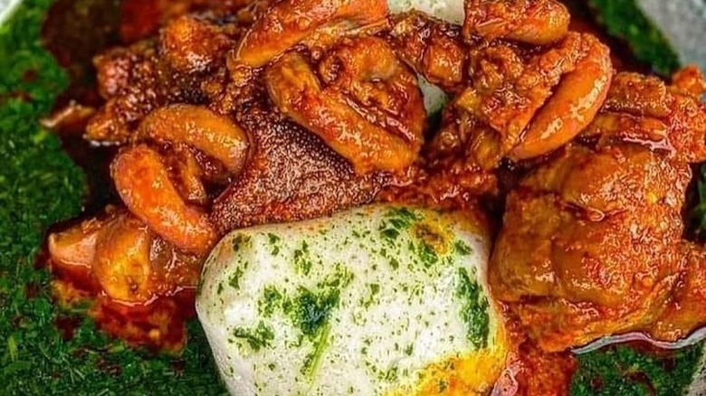
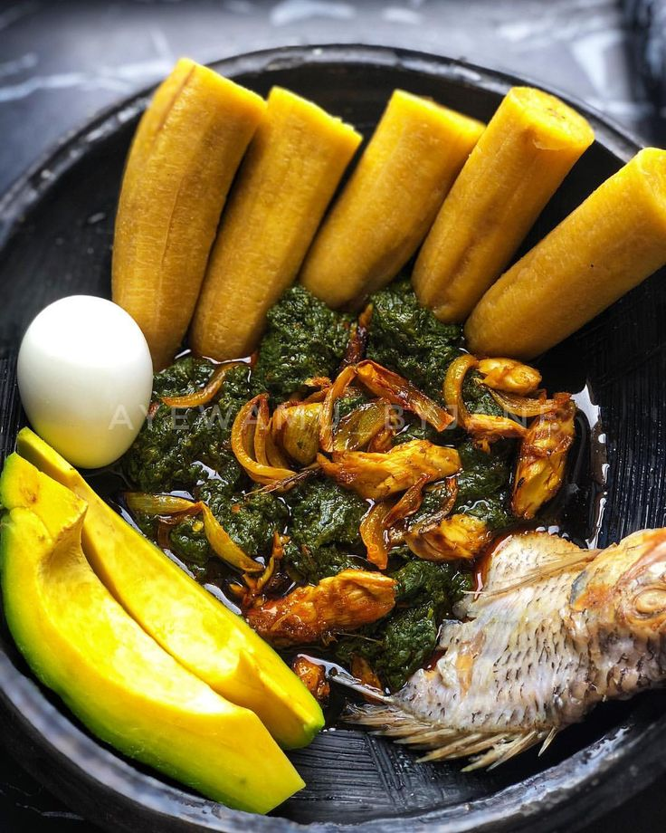
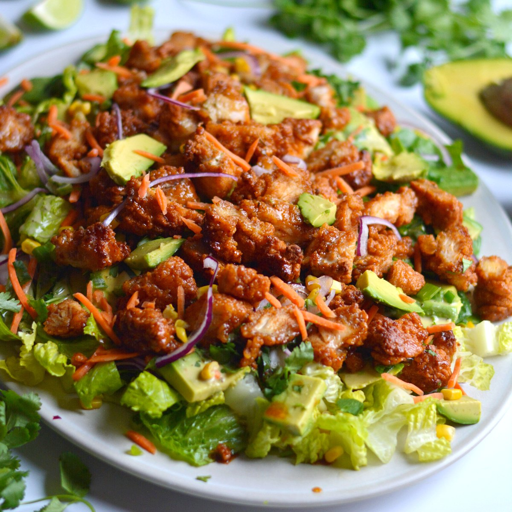
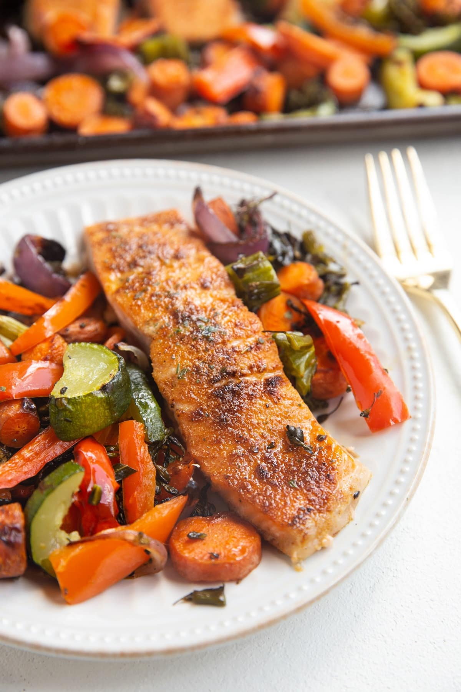
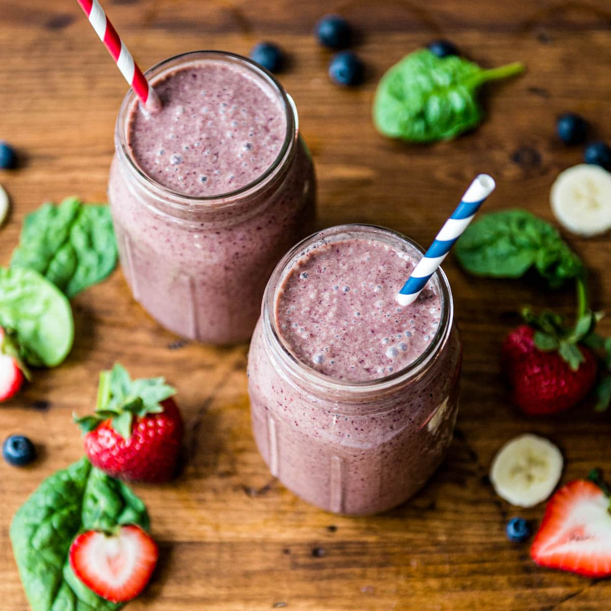
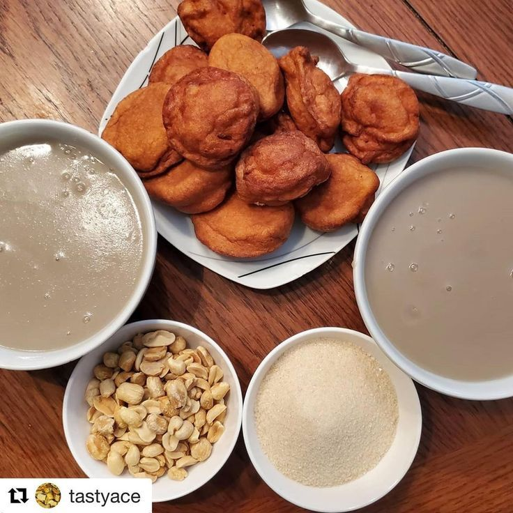
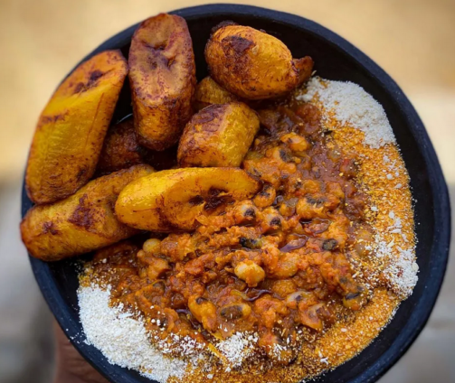
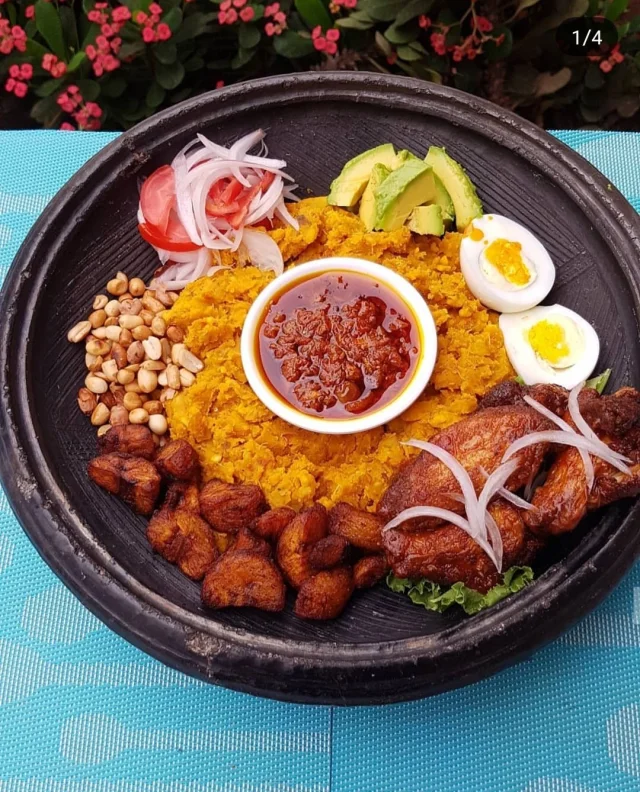
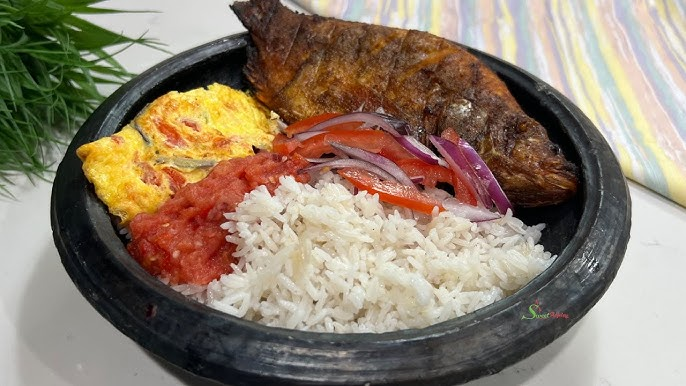

Home
Recipes
About
Explore Our Recipes

Tuozaafi
Spicy Fried Plantain(Kelewele)
kenkey-and-Fish
Fufu and Lightsoup
Jollof Rice

Yam and Palava Sauce

Chicken and Avocado Salad

Grilled Salmon with Roasted Vegetables

Spinach and Berry Smoothie
Waakye

Millet Poridge

Beans and Fried Plantain

Mashed Plantain(3tc)
Banku and Pepper

Braised Rice and Pepper